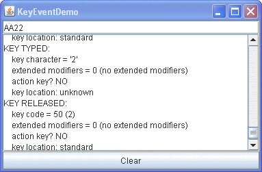

Lección: Escribiendo Listener Events
Sección: Implementando Listeners para los Eventos Comunmente Manejados
Cómo Escribir un Key Listener
Los eventos de teclado indican cuando el usuario está tecleando en el teclado. Específicamente los eventos de teclado son disparados por el componente con el enfoque del teclado cuando el usuario presiona o suelta las teclas del teclado. Para información detallada sobre el enfoque, vea Cómo Usar el Subsistema de Foco.
Nota:
Para definir reacciones especiales a teclas particulares, use los atajos de teclado en vez de un key listener. Para más información, vea Cómo Usar Atajos de Teclado.
Las notificaciones son enviadas a través de dos clases básicas de eventos de teclado:
- El tecleo de un carácter Unicode
- Presionar o soltar una tecla en el teclado
La primera clase de evento se llama un evento mecanografiado. La segunda clase es un evento tecla-presionada o tecla-liberada.
En general, usted reacciona sólo a eventos de tecla-presionada a menos que necesite saber cuándo el usuario presiona teclas que no correspondan a caracteres. Por ejemplo, para saber cuándo el usuario teclea un carácter Unicode "a" ya sea presioando una tecla como 'a' o presionando varias teclas en secuencia 'a' usted maneja eventos mecanografiados. Por otro lado, para saber cuándo el usuario presiona la tecla F1, o si el usuario presionó la tecla '3' en el teclado numérico, usted maneja eventos de tecla-presionada.
Nota:
Para disparar eventos de teclado, un componente debe tener el foco del teclado.
Para hacer que un componente obtenga el foco del teclado, siga estos pasos:
-
Asegúrese de que el método
isFocusabledel componente devuelvetrue. Este estado permite al componente recibir el foco. Por ejemplo, puede habilitar el foco del teclado para un componenteJLabelllamando al métodosetFocusable(true)de la etiqueta. -
Asegúrese de que el componente solicita el foco cuando sea apropiado. Para componentes personalizados,
implemente un mouse listener que llame al método
requestFocusInWindowcuando se pulse con el ratón el componente.
Nota de versión:
El subsistema de enfoque consume teclas de desplazamiento de enfoque, como Tab y Shift Tab. Si necesita evitar que se consuman las teclas de desplazamiento de enfoque, puede llamar a
component.setFocusTraversalKeysEnabled(false)
en el componente que está disparando los eventos de teclado. Su programa debe entonces manejar el cruce de
foco por sí solo. Alternativamente, puede usar la clase
KeyEventDispatcher para premonitorizar todos los eventos de teclado. La página
Cómo Usar el Subsistema de Foco tiene
información detallada sobre el subsistema de foco.
Puede obtener información detallada sobre un evento de tecla-presionada en particular. Por ejemplo, puede preguntar a un evento de tecla-presionada para determinar si fue disparado desde una tecla de acción. Ejemplos de teclas de acción incluyen Copiar, Pegar, Página Arriba, Deshacer, y las flechas y las teclas de función. Puede también preguntar a un evento de tecla-presionada o tecla-liberada para determinar la ubicación de la tecla que disparó el evento. La mayoría de los eventos de teclado son disparados desde el teclado estándar, pero los eventos para algunas teclas, tales como Mayúsculas, tienen información sobre si el usuario presionó la tecla Mayúsculas en el lado izquierdo o derecho del teclado. De la misma forma, el número '2' puede ser tecleado desde el teclado estándar o desde el teclado numérico.
Para los eventos de tecla-presionada puede obtener el valor del carácter de la tecla así como cualesquiera modificadores utilizados.
Nota:
No debería confiar el valor de carácter de teclado devuelto por getKeyChar a menos que
provenga de un evento de tecla-presionada.
El ejemplo siguiente demuestra los eventos de teclado. Consiste en un campo de texto donde puede teclear, seguido por un área de texto que muestra un mensaje cada vez que el campo de texto dispara un evento de teclado. Un botón al final de la ventana le permite borrar tanto el campo de texto como el área de texto.

Intente esto:
-
Pulse el botón Lanzar para ejecutar KeyEventDemo usando
Java™ Web Start (
descargue KDJ 7 o posterior). Alternativamente, para compilar y ejecutar el ejemplo por sí
mismo, consulte el
índice de ejemplos.

-
Teclee una 'a' minúscula presionando y soltando la tecla A en el teclado.
El campo de texto dispara tres eventos: Un evento de tecla-presionada, un evento mecanografiado, y un evento de tecla-liberada. Note que el evento mecanografiado no tiene información del código de tecla, y que los eventos de tecla-presionada y tecla-liberada no tienen la información del carácter de la tecla. Ninguno de los eventos hasta ahora son de teclas modificadoras o de acción y la ubicación de la tecla, informada en los eventos de tecla-presionada y tecla-liberada, lo más probable es que sea estándar. -
Presión el botón Clear.
Podría querer hacer esto después de cada uno de los siguientes pasos. -
Presione y libere la tecla Mayúsculas.
El campo de texto dispara dos eventos: uno de tecla-presionada y uno de tecla-liberada. El campo de texto no dispara un evento mecanografiado porque Mayúsculas, por sí misma, no corresponde a ningún carácter. -
Teclee una 'A' mayúscula presionando las teclas Mayúsculas y A.
Verá los siguientes eventos, aunque quizás no en este orden: key-pressed (Shift), key-pressed (A), key typed ('A'), key-released (A), key-released (Shift). Note que Mayúsculas se lista como la tecla modificadora para los eventos de tecla-presionada y tecla-liberada. -
Teclee una 'A' mayúsculas presionando y liberando la tecla Bloque de Mayúsculas, y después presione la
tecla A.
Debería ver los eventos siguientes: key-pressed (Caps Lock), key-pressed (A), key typed ('A'), key-released (A). Note que Bloqueo de Mayúsculas no se lista como una tecla modificadora. - Presione la tecla de Tabulación. No se reciben eventos de tecla-presionada o tecla-liberada en el key event listener. Esto es así porque el subsistema de foco consume las teclas de desplazamiento de foco, tales como el Tabulador y Mayúsculas-Tabulador. Presione Tabulador dos veces más y devuelva el foco al área de texto.
- Presione una tecla de función, tal como F3. Verá que la tecla de función es una tecla de acción.
- Presione la tecla izquierda de Mayúsculas, seguida por la tecla derecha de Mayúsculas. Los eventos de tecla-presionada y tecla-liberada indican qué teclas Mayúsculas fueron tecleadas.
-
Presione la tecla de Bloque Numérico si su teclado tiene un teclado numérico.
Como con el Bloque de Mayúsculas, hay un evento de tecla-presionada, pero no un evento de tecla-liberada. - Presione la tecla '2' en el teclado numérico. Verá los eventos de tecla-presionada, mecanografiado, y tecla-liberada para el número '2'.
- Presiones la tecla '2' en el teclado estándar. De nuevo, verá los mensajes de los tres eventos. Los eventos mecanografiados para ambas teclas del 2 son idénticos. Pero los eventos de tecla-presionada y tecla-liberada indican diferentes códigos de tecla y diferentes ubicaciones.
- Presione la tecla de Bloque Numérico de nuevo. Un evento de tecla-liberada se dispara.
Puede encontrar el código del ejemplo en
KeyEventDemo.java
. Aquí está el código del manejo del evento de teclado de la demostración:
public class KeyEventDemo ... implements KeyListener ... {
...//where initialization occurs:
typingArea = new JTextField(20);
typingArea.addKeyListener(this);
//Uncomment this if you wish to turn off focus
//traversal. The focus subsystem consumes
//focus traversal keys, such as Tab and Shift Tab.
//If you uncomment the following line of code, this
//disables focus traversal and the Tab events
//become available to the key event listener.
//typingArea.setFocusTraversalKeysEnabled(false);
...
/** Handle the key typed event from the text field. */
public void keyTyped(KeyEvent e) {
displayInfo(e, "KEY TYPED: ");
}
/** Handle the key-pressed event from the text field. */
public void keyPressed(KeyEvent e) {
displayInfo(e, "KEY PRESSED: ");
}
/** Handle the key-released event from the text field. */
public void keyReleased(KeyEvent e) {
displayInfo(e, "KEY RELEASED: ");
}
...
private void displayInfo(KeyEvent e, String keyStatus){
//You should only rely on the key char if the event
//is a key typed event.
int id = e.getID();
String keyString;
if (id == KeyEvent.KEY_TYPED) {
char c = e.getKeyChar();
keyString = "key character = '" + c + "'";
} else {
int keyCode = e.getKeyCode();
keyString = "key code = " + keyCode
+ " ("
+ KeyEvent.getKeyText(keyCode)
+ ")";
}
int modifiersEx = e.getModifiersEx();
String modString = "extended modifiers = " + modifiersEx;
String tmpString = KeyEvent.getModifiersExText(modifiersEx);
if (tmpString.length() > 0) {
modString += " (" + tmpString + ")";
} else {
modString += " (no extended modifiers)";
}
String actionString = "action key? ";
if (e.isActionKey()) {
actionString += "YES";
} else {
actionString += "NO";
}
String locationString = "key location: ";
int location = e.getKeyLocation();
if (location == KeyEvent.KEY_LOCATION_STANDARD) {
locationString += "standard";
} else if (location == KeyEvent.KEY_LOCATION_LEFT) {
locationString += "left";
} else if (location == KeyEvent.KEY_LOCATION_RIGHT) {
locationString += "right";
} else if (location == KeyEvent.KEY_LOCATION_NUMPAD) {
locationString += "numpad";
} else { // (location == KeyEvent.KEY_LOCATION_UNKNOWN)
locationString += "unknown";
}
...//Display information about the KeyEvent...
}
}
La IPA de Key Listener
La clase adaptadora correspondiente es
KeyAdapter.
| Método | Propósito |
|---|---|
| keyTyped(KeyEvent) | Llamada justo después de que el usuario teclee un carácter Unicode en el componente monitorizado. |
| keyPressed(KeyEvent) | Llamado justo después de que el usuario presiones una tecla mientras el componente monitorizado tiene el foco. |
| keyReleased(KeyEvent) | Llamado justo después de que el usuario libera una tecla mientras el componente monitorizado tiene el foco. |
La clase KeyEvent hereda muchos métodos útiles desde la clase
InputEvent
, tales como getModifiersEx, y un para de métodos útiles desde las clases
ComponentEvent
y
AWTEvent
. Vea la tabla Clase InputEvent en la página
Cómo Escribir un Mouse Listener para una lista completa.
| Método | Propósito |
|---|---|
| int getKeyChar() | Obtiene el carácter Unicode asociado con este evento. Confíe en este valor sólo para eventos mecanografiados. |
| int getKeyCode() |
Obtiene el código de tecla asociado con este evento. El código de tecla identifica la tecla particular
en el teclado que el usuario presionó o liberó. La clase KeyEvent define muchas constantes
de código de teclas para las teclas más comunes. Por ejemplo, VK_A especifica la tecla
etiquetada A, y VK_ESCAPE especifica la tecla Escapar.
|
|
String getKeyText(int)
String getKeyModifiersText(int) |
Devuelve las descripciones de texto del código de tecla del evento y las teclas modificadores, respectivamente. |
|
int getModifiersEx()
String getModifiersExText(int modifiers) |
Devuelve la máscara extendida de modificadores para este evento. Hay métodos heredados de la clase
InputEvent. Los modificadores extendidos representan el estado de todas las teclas
modales. El método getModifiersExText devuelve una cadena describiendo las teclas
modificadoras extendidas y los botones del ratón. Ya que los métodos getModifiersEx y
getModifiersExText ofrecen más información sobre los eventos de teclado, se prefieren a
los métodos getKeyText o getKeyModifiersText.
|
| boolean isActionKey() | Devuelve verdadero si la tecla que dispara el evento es una tecla de acción. Ejemplos de teclas de acción incluyen Cortar, Copiar, Pegar, Página Arriba, Bloqueo de Mayúsculas, las teclas de cursor y las teclas de función. Esta información sólo es válidad para los eventos de tecla-presionada y tecla-liberada. |
| int getKeyLocation() |
Devuelve la ubicación de la tecla que disparó este evento. Esto ofrece una manera de distinguir teclas
que están más de una vez en un teclado, tales como las dos teclas Mayúsculas, por ejemplo. Los valores
posibles son
KEY_LOCATION_STANDARD, KEY_LOCATION_LEFT, KEY_LOCATION_RIGHT,
KEY_LOCATION_NUMPAD, o KEY_LOCATION_UNKNOWN. Este método siempre devuelve
KEY_LOCATION_UNKNOWN para los eventos mecanografiados.
|
Ejemplos que Usan Key Listeners
La tabla siguiente lista los ejemplos que usan key listeners.
| Ejemplo | Dónde Está Descrito | Notas |
|---|---|---|
KeyEventDemo |
Esta Sección | Informa de todos los eventos de teclado que ocurren en un campo detexto para demostrar las circunstancias bajo las cuales los eventos de teclado se disparan. |